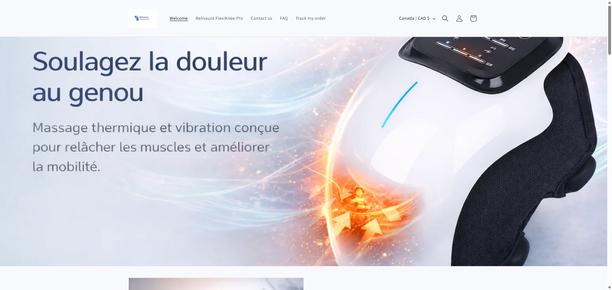
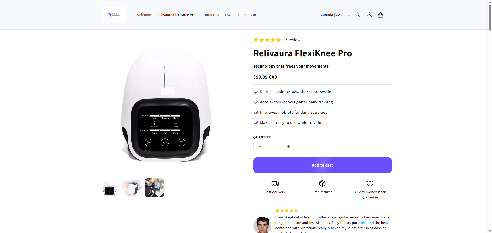
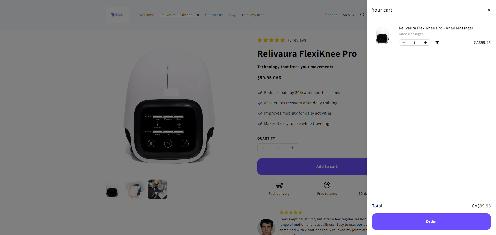

Challenge
Present a wellness device clearly while keeping the shopping experience simple, reassuring and conversion-focused across the landing, product and cart stages.
A responsive Shopify wellness storefront built around a focused product journey, clear purchase actions and a streamlined path from product discovery to cart.
Present a wellness device clearly while keeping the shopping experience simple, reassuring and conversion-focused across the landing, product and cart stages.
Shopify storefront setup, theme configuration, product-page structure, responsive UX, purchase-flow presentation and conversion-focused interface decisions.
A large product-focused hero introduces the use case and directs attention toward FlexiKnee Pro.
Price, quantity, CTA and reassurance elements are grouped around the main purchase decision.
The cart drawer preserves product context, quantity control, total and a clear next action toward checkout.



Clear hierarchy, prominent Add to cart action, quantity controls and reassurance around delivery, returns and guarantee.
A simple storefront structure designed to keep the core product and purchase journey understandable across screen sizes.